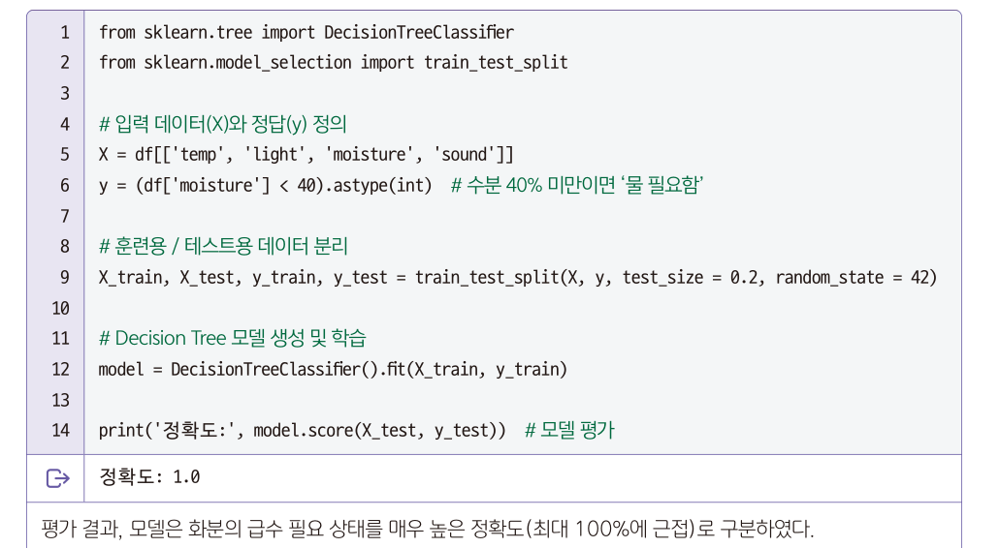
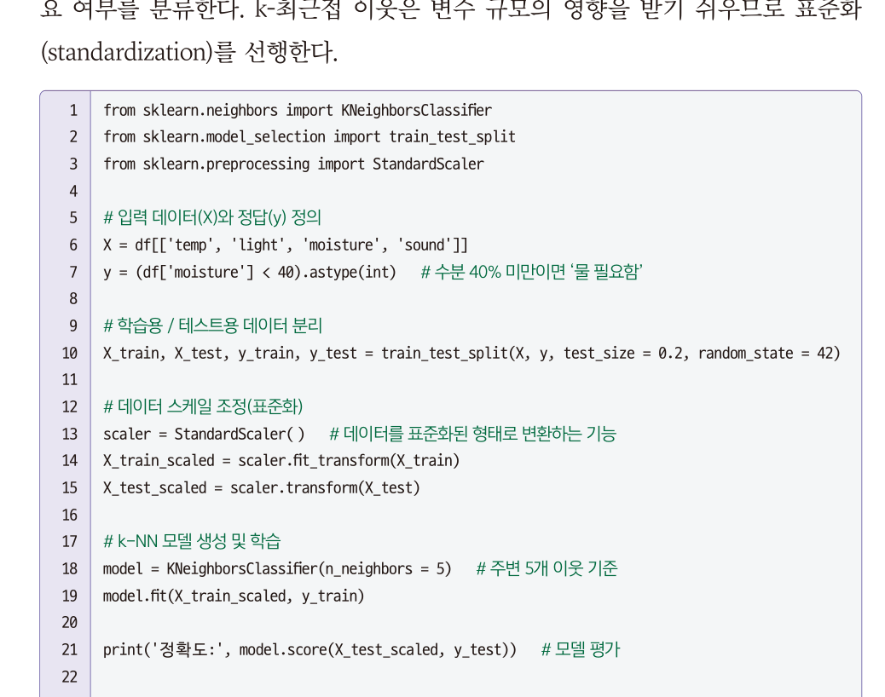
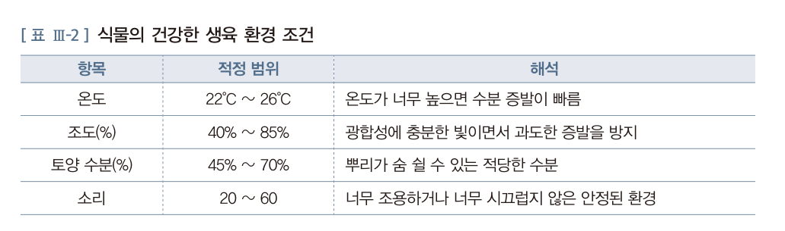
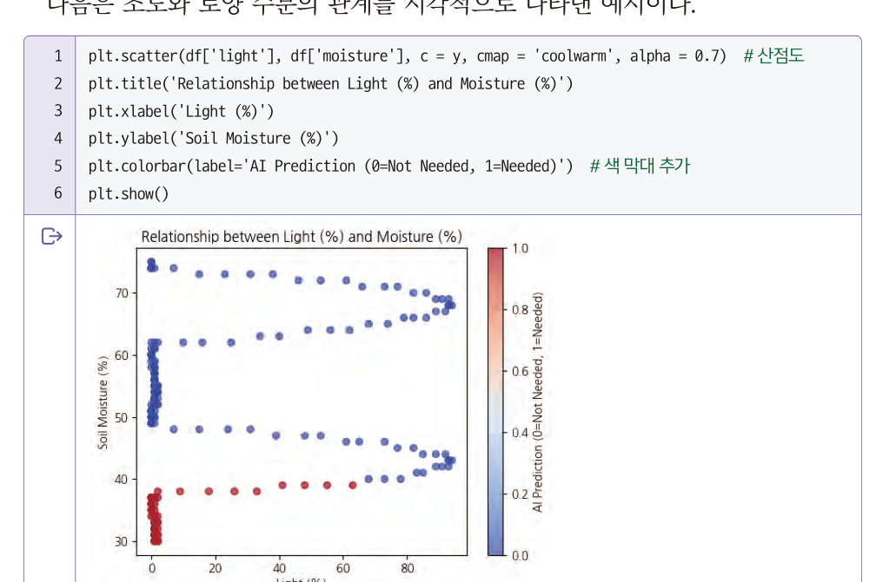
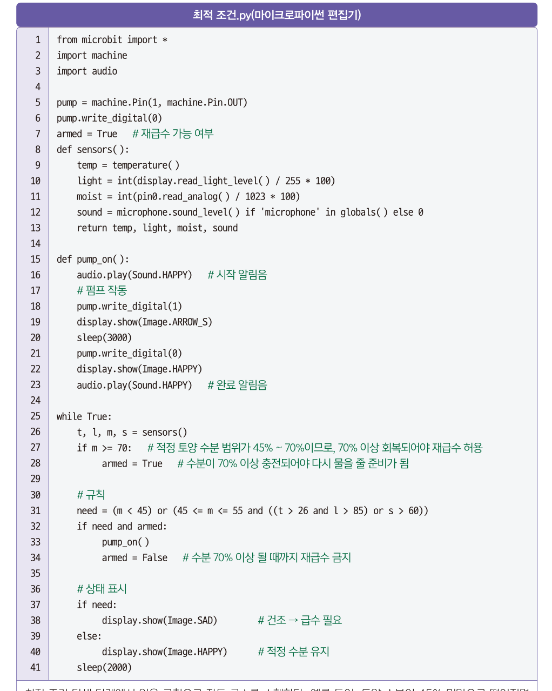
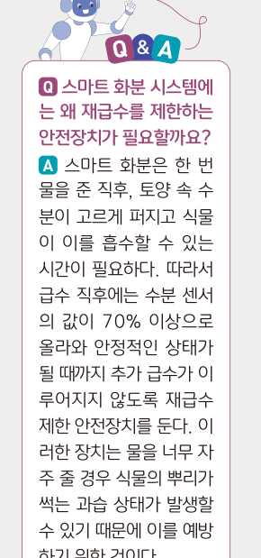
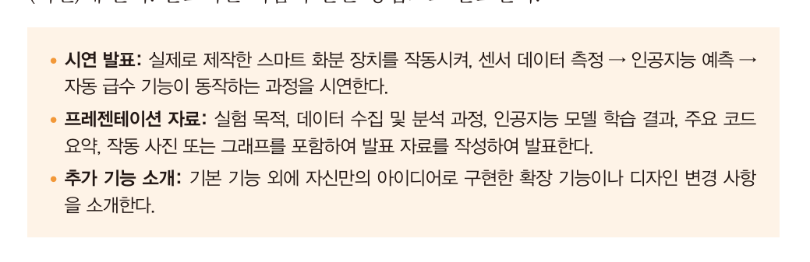
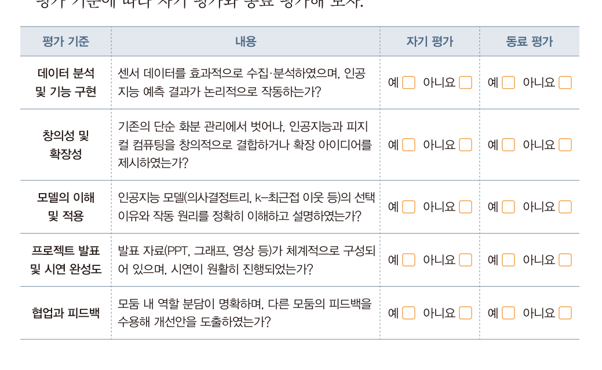
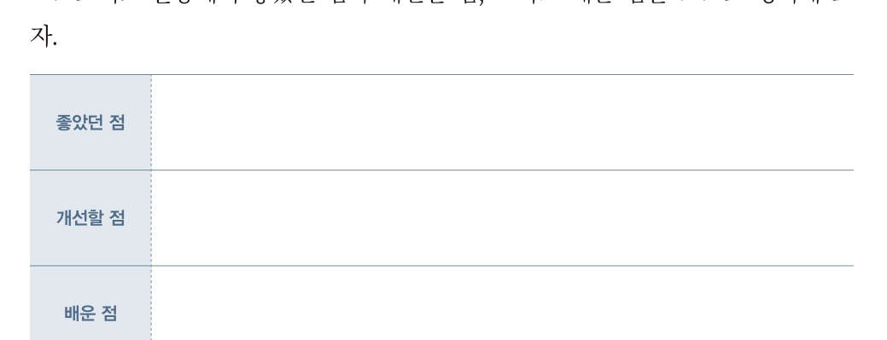

<!DOCTYPE html><html lang="ko"><head><meta charset="utf-8"><meta name="viewport" content="width=device-width,initial-scale=1">
<title>8회차 · 모델 학습과 스마트 화분 완성</title>
<link rel="stylesheet" href="style.css?v=10">
<style>
/* 8회차 전용 — 혼동행렬 · 급수 규칙 시뮬레이터 */
.cm{border:1px solid var(--line);border-radius:4px;background:var(--ink2);padding:20px;margin:16px 0}
.cmgrid{display:grid;grid-template-columns:88px 1fr 1fr;gap:8px;margin:14px 0}
.cmgrid > div{padding:11px 12px;border-radius:3px;font-size:12.5px;text-align:center}
.cmgrid .hd2{background:#101119;color:var(--accent);font-weight:700;font-size:11.5px;letter-spacing:.05em;display:flex;align-items:center;justify-content:center}
.cmgrid .rh{background:#101119;color:var(--accent);font-weight:700;font-size:11.5px;display:flex;align-items:center;justify-content:center}
.cmgrid .cell{border:1px solid var(--line2);background:rgba(255,255,255,.02)}
.cmgrid .cell .lb{font-size:10.5px;color:var(--dim);letter-spacing:.06em;text-transform:uppercase}
.cmgrid .cell .nn{font-family:var(--serif);font-size:26px;font-weight:800;margin:3px 0}
.cmgrid .cell.tp{border-color:rgba(139,192,164,.5);background:rgba(139,192,164,.09)}
.cmgrid .cell.tn{border-color:rgba(139,192,164,.35);background:rgba(139,192,164,.05)}
.cmgrid .cell.fn{border-color:rgba(217,138,122,.6);background:rgba(217,138,122,.12)}
.cmgrid .cell.fp{border-color:rgba(216,180,90,.5);background:rgba(216,180,90,.08)}
.cm .sl{display:grid;grid-template-columns:150px 1fr 56px;gap:11px;align-items:center;font-size:12.5px;margin-bottom:9px}
.cm .sl .nm{color:var(--mut)}
.cm .sl input{accent-color:#d8b45a}
.cm .sl .vv{text-align:right;font-family:var(--serif);font-weight:800}
.cm .mets{display:grid;grid-template-columns:repeat(auto-fit,minmax(130px,1fr));gap:10px;margin-top:14px}
.cm .mets div{border:1px solid var(--line);border-radius:3px;padding:11px 13px;background:rgba(255,255,255,.015)}
.cm .mets .l{font-size:10.5px;letter-spacing:.1em;color:var(--dim);text-transform:uppercase}
.cm .mets .v{font-family:var(--serif);font-size:21px;font-weight:800;margin-top:3px}
.cm .story{margin-top:14px;padding:13px 16px;border-radius:3px;font-size:13px;line-height:1.85;border-left:2px solid var(--accent);background:rgba(216,180,90,.06);color:var(--mut)}
.cm .story b{color:var(--tx)}
.pump{border:1px solid var(--line);border-radius:4px;background:var(--ink2);padding:20px;margin:16px 0}
.pump .sl{display:grid;grid-template-columns:120px 1fr 74px;gap:11px;align-items:center;font-size:12.5px;margin-bottom:10px}
.pump .sl .nm{color:var(--mut)}
.pump .sl input{accent-color:#d8b45a}
.pump .sl .vv{text-align:right;font-family:var(--serif);font-weight:800;font-size:14px}
.pump .state{display:grid;grid-template-columns:repeat(auto-fit,minmax(150px,1fr));gap:10px;margin-top:16px}
.pump .state div{border:1px solid var(--line);border-radius:3px;padding:12px 14px;background:rgba(255,255,255,.015)}
.pump .state .l{font-size:10.5px;letter-spacing:.1em;color:var(--dim);text-transform:uppercase}
.pump .state .v{font-size:15px;font-weight:700;margin-top:4px}
.pump .expl{margin-top:14px;font-family:var(--mono);font-size:12px;line-height:2;color:#d8dae4;background:#0a0b10;
 border:1px solid var(--line);border-radius:3px;padding:13px 15px;overflow-x:auto}
.pump .expl .t2{color:var(--green);font-weight:700}
.pump .expl .f2{color:var(--rose);font-weight:700}
.pump .expl .c2{color:var(--dim)}
.pump .led{display:inline-flex;align-items:center;gap:7px}
.pump .led i{width:11px;height:11px;border-radius:50%;display:inline-block}
</style></head><body>

<div class="lhead" id="lhead"></div>
<div class="bnav" id="bnav"></div>
<div id="blocks"></div>
<div id="timer"></div>

<footer><div class="wrap-n">
  2026-2 온라인 공동교육과정 · 인공지능 융합프로젝트 — 대전대신고등학교 하진수<br>
  교과서 Ⅲ. 융합 프로젝트 구현 <b>121~131쪽</b> ·
  <a href="index.html" style="color:var(--accent)">운영실 메인</a> ·
  <a href="lesson07.html" style="color:var(--accent)">← 이전 회차</a> ·
  <button class="tbtn ghost" style="margin-left:6px" onclick="resetLesson()">이 회차 기록 초기화</button>
</div></footer>

<script>
const LESSON={
n:8,date:"2026.10.26",dow:"월",time:"17:00~21:00",ch:"29~32차시",mode:"원격 수업",
title:"모델 학습과 스마트 화분 완성",
goals:[
 "지도학습 알고리즘으로 모델을 학습시키고 정확도와 혼동행렬로 성능을 평가할 수 있다.",
 "분석 결과를 종합해 식물의 최적 생육 조건을 도출할 수 있다.",
 "도출한 규칙을 피지컬 컴퓨팅으로 구현하고 결과를 공유·성찰할 수 있다."],
breaks:[{after:3,mins:10},{after:4,mins:10}],
blocks:[

/* ============ 0. 도입 ============ */
{kind:"open",nav:"도입",mins:10,title:"정확도 100%인데 식물이 죽었다",
 sub:"지난 시간에 모은 데이터로 오늘 모델을 학습시킵니다. 그리고 <b>그 숫자를 의심하는 법</b>을 배웁니다.",
 sections:[
 {n:"01",h:"오늘의 질문",
  html:`<div class="hook"><div class="hk">Hook</div>
   <div class="hq">모델 정확도 <em style="color:var(--accent);font-style:normal">100%</em>.<br>그런데 화분의 식물은 시들었다.</div>
   <p>어떻게 이런 일이 가능할까요? 오늘 우리가 학습시킬 모델도 <b>정확도 1.0</b>이 나옵니다. 교과서에도 그렇게 적혀 있습니다.
   <br><br>그런데 <b>정확도는 거짓말을 하지 않으면서도 사람을 속일 수 있습니다.</b>
   오늘 배울 <b>혼동행렬</b>이 그 속임수를 찾아내는 도구입니다.</p></div>
   <div class="ask"><div class="ah">발문 · 채팅창에</div>
   <ol>
    <li>&ldquo;물이 필요한데 필요 없다고 예측&rdquo;한 경우와 &ldquo;필요 없는데 필요하다고 예측&rdquo;한 경우 —
     <b>어느 쪽이 식물에게 더 나쁜가요?</b></li>
    <li>두 실수가 <b>같은 무게</b>로 취급되어도 괜찮을까요?</li>
   </ol></div>`},
 {n:"02",h:"출결과 지난 과제 확인",
  html:`<div class="box warn"><b class="t">지난 시간 각자의 할 일을 끝내셨나요?</b>
   7회차 활동지 11번에 적은 <b>모둠원별 할 일</b>을 확인합니다.
   특히 <b>레이블(정답) 열을 데이터에 추가</b>해 왔다면 오늘 바로 학습을 시작할 수 있습니다.
   못 했더라도 괜찮습니다 — 강의 ①에서 함께 만듭니다.</div>
   <div class="box"><b>확인해 주세요</b>
   <ul>
    <li>카메라를 켜고 이름을 <b>학교명_이름</b> 형식으로 바꿔 주세요.</li>
    <li>교과서 <b>121~131쪽</b>을 펴 두세요.</li>
    <li><b>7회차 코랩 노트북</b>을 열어 두세요. 오늘 그 아래에 이어서 작성합니다.</li>
    <li>모둠 소회의실은 <b>지난 시간과 동일</b>하게 편성됩니다.</li>
   </ul>
   <div class="mini"><span>출결 1차 · 지금</span><span>2차 · 강의 종료 시</span><span>3차 · 토의 종료 시</span></div></div>`},
 {n:"03",h:"오늘 남은 단계를 끝냅니다",
  html:`<div class="flow">
   <div class="fstep" style="opacity:.45"><div class="n">STEP 1</div><div class="t">문제 인식</div><div class="d">7회차 완료</div></div>
   <div class="fstep" style="opacity:.45"><div class="n">STEP 2</div><div class="t">탐구 계획</div><div class="d">7회차 완료</div></div>
   <div class="fstep"><div class="n">STEP 3</div><div class="t">실행 및 탐구</div><div class="d">강의 ①②③ · 모델 학습 → 최적 조건 → 자동 급수</div></div>
   <div class="fstep"><div class="n">STEP 4</div><div class="t">결과 공유<br>및 성찰</div><div class="d">과제 · 보고서와 발표 준비</div></div>
  </div>
  <div class="tw"><table style="min-width:600px">
   <thead><tr><th style="width:80px">시간</th><th style="width:80px">교과서</th><th>하는 일</th></tr></thead>
   <tbody>
    <tr><td><b>강의 ①</b></td><td>121~122쪽</td><td>의사결정트리와 k-NN 학습 · <b>정확도의 함정과 혼동행렬</b> · 특성 중요도</td></tr>
    <tr><td><b>강의 ②</b></td><td>123~125쪽</td><td><b>최적 조건 탐색</b> — 표 Ⅲ-2 · 산점도와 3차원 분석</td></tr>
    <tr><td><b>강의 ③</b></td><td>126쪽</td><td><b>피지컬 컴퓨팅</b> — 규칙을 코드로, 그리고 안전장치</td></tr>
    <tr><td><b>과제</b></td><td>127~131쪽</td><td>결과 공유 준비 · <b>보고서 8항목</b> 작성</td></tr>
   </tbody></table></div>
   <div class="box tip"><b>오늘의 한 문장</b> · <b>숫자를 믿기 전에 무엇을 세었는지 보라.</b></div>`}]},

/* ============ 1. 강의 ① ============ */
{kind:"lecture",nav:"강의 ①",mins:30,title:"모델 학습과 성능 평가",
 sub:"29차시 — 두 알고리즘으로 학습시키고, 정확도를 의심합니다. 교과서 121~122쪽.",
 sections:[
 {n:"01",h:"① 의사결정트리 적용",
  lead:"모델을 학습하기 위해 데이터를 <b>훈련 데이터와 테스트 데이터(일반적으로 8:2)</b>로 나누어 학습과 평가를 수행합니다.",
  code:[{name:"의사결정트리 학습과 평가",src:`from sklearn.tree import DecisionTreeClassifier
from sklearn.model_selection import train_test_split

# 입력 데이터(X)와 정답(y) 정의
X = df[['temp', 'light', 'moisture', 'sound']]
y = (df['moisture'] < 40).astype(int)      # 수분 40% 미만이면 '물 필요함'

# 훈련용 / 테스트용 데이터 분리
X_train, X_test, y_train, y_test = train_test_split(X, y, test_size = 0.2, random_state = 42)

# Decision Tree 모델 생성 및 학습
model = DecisionTreeClassifier().fit(X_train, y_train)

print('정확도:', model.score(X_test, y_test))    # 모델 평가
# 정확도: 1.0`}],
  after:`<figure class="fig">
   <figcaption><b>교과서 121쪽</b> 의사결정트리 적용 결과 — 정확도 1.0</figcaption></figure>
   <div class="grid g2">
    <div class="card"><h4>train_test_split</h4><p>데이터를 훈련용과 테스트용으로 나눕니다. <span style="font-family:var(--mono)">test_size=0.2</span>는 <b>20%를 시험용으로 남긴다</b>는 뜻입니다.
     <b>배운 문제로 시험을 보면 안 되기</b> 때문입니다.</p></div>
    <div class="card"><h4>random_state = 42</h4><p>데이터를 섞는 방식이 <b>매번 동일</b>해져 실험을 반복해도 같은 결과를 얻습니다.
     비교와 검증이 더 정확해집니다. 42는 관례적으로 쓰는 숫자입니다.</p></div>
    <div class="card"><h4>과대적합 (overfitting)</h4><p>훈련 데이터에 <b>지나치게 맞춰</b> 학습한 결과, 새로운 데이터에서 성능이 떨어지는 현상</p></div>
    <div class="card"><h4>과소적합 (underfitting)</h4><p>데이터의 패턴을 충분히 학습하지 못해 전반적으로 성능이 낮은 상태</p></div>
   </div>`,
  pages:[{p:121,t:"4 모델 학습 및 예측 결과 · (1) 의사결정트리 적용 결과"}]},
 {n:"02",h:"정확도 1.0을 의심해 봅시다",
  lead:"교과서는 &ldquo;모델은 화분의 급수 필요 상태를 <b>매우 높은 정확도로 구분</b>하였다&rdquo;고 적고 있습니다. 그런데 코드를 자세히 보면 이상한 점이 있습니다.",
  html:`<div class="box warn"><b class="t">코드를 다시 보세요</b>
   <div style="font-family:var(--mono);font-size:12.5px;line-height:2;margin:10px 0;color:#d8dae4">
    X = df[['temp', 'light', <b style="color:var(--rose)">'moisture'</b>, 'sound']]<br>
    y = (df[<b style="color:var(--rose)">'moisture'</b>] &lt; 40).astype(int)
   </div>
   <b>정답(y)을 만드는 데 쓴 &lsquo;moisture&rsquo;가 입력(X)에도 들어 있습니다.</b>
   <br><br>모델에게 &ldquo;수분이 40 미만이면 물이 필요하다&rdquo;를 맞히라고 하면서, <b>수분 값을 그대로 보여 준 것</b>입니다.
   정확도 1.0은 모델이 똑똑해서가 아니라 <b>답을 미리 알려 줬기 때문</b>입니다.</div>
   <div class="box tip"><b>이것을 데이터 누설(leakage)이라고 합니다</b> · 예측하려는 정답의 정보가 입력에 섞여 들어간 상태입니다.
   시험 문제와 답안지를 함께 준 셈이죠. 실무에서 가장 흔하고 가장 위험한 실수입니다.
   <br><br><b>그렇다면 이 실습은 잘못된 것인가?</b> 아닙니다. 교과서의 목적은 <b>학습·평가 절차를 익히는 것</b>이며,
   <span style="font-family:var(--mono)">moisture &lt; 40</span>이라는 <b>기준을 사람이 정했다</b>는 점을 보여 주려는 것입니다.
   중요한 것은 여러분이 <b>&ldquo;이 정확도는 무엇을 의미하는가&rdquo;를 물을 수 있게 되는 것</b>입니다.</div>
   <div class="doit"><div class="dh">해 보기 <span class="m">5분 · 코랩</span></div>
    <p>입력에서 <span style="font-family:var(--mono)">'moisture'</span>를 <b>빼고</b> 다시 학습시켜 보세요.</p>
    <div class="code" style="margin-top:10px"><div class="ch"><span>누설을 제거한 버전</span></div>
     <pre>X = df[['temp', 'light', 'sound']]      <span class="c"># moisture 제외</span>
y = (df['moisture'] &lt; 40).astype(int)

X_train, X_test, y_train, y_test = train_test_split(X, y, test_size=0.2, random_state=42)
model2 = DecisionTreeClassifier().fit(X_train, y_train)
print('정확도(누설 제거):', model2.score(X_test, y_test))</pre></div>
    <p><b>정확도가 얼마로 떨어졌나요?</b> 그 숫자가 <b>진짜 실력</b>입니다.
    온도·조도·소음만으로 수분 상태를 맞히는 것이 이 모델의 실제 과제입니다.</p></div>`},
 {n:"03",h:"혼동행렬 — 어떤 실수를 했는가",
  lead:"정확도 외에 모델이 &lsquo;물 필요(1)&rsquo;와 &lsquo;물 불필요(0)&rsquo;를 각각 얼마나 잘 예측했는지 확인하기 위해 <b>혼동행렬</b>을 분석합니다.",
  html:`<div class="box"><b>교과서 121쪽의 경고</b> · 실제로는 &lsquo;물 필요(1)&rsquo; 상태인데 &lsquo;물 불필요(0)&rsquo;로 잘못 예측(<b>False Negative</b>)하는 경우는
   <b>식물 생장에 치명적</b>일 수 있으므로, 이러한 오류가 얼마나 발생하는지 확인하는 것이 중요합니다.</div>
   <div class="cm">
    <div style="font-size:13px;color:var(--mut);margin-bottom:6px">네 칸의 개수를 움직여 보세요. <b>정확도는 높은데 식물이 죽는 경우</b>를 만들 수 있습니다.</div>
    <div class="cmgrid">
     <div class="hd2"></div><div class="hd2">예측 · 물 불필요(0)</div><div class="hd2">예측 · 물 필요(1)</div>
     <div class="rh">실제<br>물 불필요(0)</div>
      <div class="cell tn"><div class="lb">TN · 정상 판정</div><div class="nn" id="cTN">85</div><div class="lb">잘 맞혔다</div></div>
      <div class="cell fp"><div class="lb">FP · 헛물</div><div class="nn" id="cFP">5</div><div class="lb">물을 더 줬다</div></div>
     <div class="rh">실제<br>물 필요(1)</div>
      <div class="cell fn"><div class="lb">FN · 놓침</div><div class="nn" id="cFN">8</div><div class="lb">식물이 마른다</div></div>
      <div class="cell tp"><div class="lb">TP · 정상 판정</div><div class="nn" id="cTP">2</div><div class="lb">잘 맞혔다</div></div>
    </div>
    <div class="sl"><div class="nm">TN 정상→불필요</div><input type="range" id="sTN" min="0" max="200" step="1" value="85"><div class="vv" id="vTN">85</div></div>
    <div class="sl"><div class="nm">FP 헛물</div><input type="range" id="sFP" min="0" max="100" step="1" value="5"><div class="vv" id="vFP">5</div></div>
    <div class="sl"><div class="nm">FN <b style="color:var(--rose)">놓침</b></div><input type="range" id="sFN" min="0" max="100" step="1" value="8"><div class="vv" id="vFN">8</div></div>
    <div class="sl"><div class="nm">TP 정상→필요</div><input type="range" id="sTP" min="0" max="100" step="1" value="2"><div class="vv" id="vTP">2</div></div>
    <div class="mets">
     <div><div class="l">정확도 Accuracy</div><div class="v" id="mAcc">—</div></div>
     <div><div class="l">재현율 Recall</div><div class="v" id="mRec">—</div></div>
     <div><div class="l">정밀도 Precision</div><div class="v" id="mPre">—</div></div>
     <div><div class="l">놓친 비율</div><div class="v" id="mMiss">—</div></div>
    </div>
    <div class="story" id="cmStory">—</div>
    <div style="display:flex;gap:8px;flex-wrap:wrap;margin-top:12px">
     <button class="tbtn ghost" onclick="cmPre(85,5,8,2)">정확도는 높은데 식물이 죽는 경우</button>
     <button class="tbtn ghost" onclick="cmPre(80,10,0,10)">놓침이 없는 경우</button>
     <button class="tbtn ghost" onclick="cmPre(60,30,0,10)">지나치게 자주 주는 경우</button>
    </div>
   </div>
   <div class="tw"><table style="min-width:520px">
    <thead><tr><th style="width:120px">지표</th><th style="width:190px">계산</th><th>무엇을 말해 주나</th></tr></thead>
    <tbody>
     <tr><td><b>정확도</b></td><td>(TP+TN) / 전체</td><td>전체 중 올바르게 예측한 비율. <b>불균형 데이터에서는 속기 쉽다</b></td></tr>
     <tr><td><b>재현율</b></td><td>TP / (TP+FN)</td><td>실제로 물이 필요한 경우 중 <b>몇 %를 잡아냈는가</b> ← 식물에게 가장 중요</td></tr>
     <tr><td><b>정밀도</b></td><td>TP / (TP+FP)</td><td>물이 필요하다고 한 것 중 <b>몇 %가 진짜였는가</b> ← 물 낭비와 관련</td></tr>
    </tbody></table></div>
   <div class="box warn"><b class="t">5회차 낙상 감지와 같은 이야기입니다</b>임곗값을 낮추면 헛알람(FP)이 늘고, 높이면 놓침(FN)이 늘었습니다.
   여기서도 똑같습니다. <b>어느 실수를 감수할 것인가는 기술이 아니라 사람이 정하는 문제</b>입니다.</div>`,
  pages:[{p:122,t:"(2) k-최근접 이웃 알고리즘 적용 결과"}]},
 {n:"04",h:"② k-최근접 이웃(k-NN) 적용",
  lead:"두 번째 알고리즘입니다. 데이터 포인트와 <b>가장 가까운 이웃(k=5)</b>의 레이블을 참조해 예측합니다.",
  code:[{name:"k-NN 학습 — 표준화가 필요한 이유",src:`from sklearn.neighbors import KNeighborsClassifier
from sklearn.model_selection import train_test_split
from sklearn.preprocessing import StandardScaler

X = df[['temp', 'light', 'moisture', 'sound']]
y = (df['moisture'] < 40).astype(int)

X_train, X_test, y_train, y_test = train_test_split(X, y, test_size = 0.2, random_state = 42)

# 데이터 스케일 조정(표준화)
scaler = StandardScaler()
X_train_scaled = scaler.fit_transform(X_train)
X_test_scaled  = scaler.transform(X_test)

# k-NN 모델 생성 및 학습
model = KNeighborsClassifier(n_neighbors = 5)      # 주변 5개 이웃 기준
model.fit(X_train_scaled, y_train)

print('정확도:', model.score(X_test_scaled, y_test))
# 정확도: 0.9772727272727273`}],
  after:`<figure class="fig">
   <figcaption><b>교과서 122쪽</b> k-최근접 이웃 알고리즘 적용 결과 — 정확도 약 0.977</figcaption></figure>
   <div class="box tip"><b>왜 k-NN에는 표준화가 필요한가</b> · k-NN은 <b>거리</b>로 이웃을 찾습니다.
   토양 수분은 0~100, 온도는 20~30 범위입니다. 그대로 두면 <b>범위가 큰 변수가 거리를 지배</b>합니다.
   <br><br>7회차에서 단위를 0~100%로 통일한 것이 1차 정리이고, <b>StandardScaler</b>는 평균 0·표준편차 1로 맞추는 2차 정리입니다.
   의사결정트리는 조건으로 나누기만 하므로 표준화가 필요 없습니다 — <b>알고리즘에 따라 전처리가 달라집니다.</b></div>
   <div class="tw"><table style="min-width:560px">
    <thead><tr><th style="width:130px">비교 항목</th><th>의사결정트리</th><th>k-최근접 이웃</th></tr></thead>
    <tbody>
     <tr><td><b>판단 방식</b></td><td>조건(질문)으로 가지를 나눔</td><td>가까운 이웃 k개의 다수결</td></tr>
     <tr><td><b>표준화</b></td><td>필요 없음</td><td><b>반드시 필요</b></td></tr>
     <tr><td><b>해석</b></td><td>분기 규칙이 명확해 <b>설명하기 쉬움</b></td><td>왜 그렇게 판단했는지 설명이 어려움</td></tr>
     <tr><td><b>교과서 정확도</b></td><td>1.0</td><td>0.977</td></tr>
    </tbody></table></div>
   <div class="box"><b>특성 중요도 (feature importance)</b> · 의사결정트리의 큰 장점은 <b>어떤 변수가 판단에 가장 큰 영향</b>을 주는지 알 수 있다는 점입니다.
   교과서에 따르면 일반적으로 <b>토양 수분이 가장 높은 중요도</b>를 보이며, <b>온도와 조도</b>가 그 다음입니다.
   <br><br>이 분석 결과는 <b>센서 우선순위를 결정하거나 시스템을 간소화</b>할 때 유용합니다 —
   예산이 부족하면 어느 센서를 먼저 살 것인가에 대한 답이 됩니다.</div>`,
  code2:null},
 {n:"05",h:"참고 · 교과서가 정리한 용어",
  html:`<figure class="fig narrow">
   <figcaption><b>교과서 121쪽</b> 의사결정트리 · random_state · 과대/과소적합 · 정확도 · 혼동행렬 · 특성 중요도</figcaption></figure>`}],
 quiz:[
 {q:"<span style='font-family:var(--mono)'>test_size = 0.2</span>가 의미하는 것은?",
  opts:["데이터의 20%로 학습한다","데이터의 20%를 테스트용으로 남긴다","정확도가 20%다","20개의 데이터를 쓴다"],
  a:1,why:"전체의 <b>20%를 테스트용</b>으로 남기고 80%로 학습합니다. 배운 문제로 시험을 보면 실력을 알 수 없기 때문입니다. 교과서 121쪽."},
 {q:"실제로는 &lsquo;물 필요(1)&rsquo;인데 &lsquo;물 불필요(0)&rsquo;로 예측한 오류를 무엇이라 하며, 왜 중요한가?",
  opts:["False Positive — 물을 낭비한다","False Negative — 식물 생장에 치명적일 수 있다","True Positive — 잘 맞힌 경우다","True Negative — 잘 맞힌 경우다"],
  a:1,why:"<b>False Negative(놓침)</b>입니다. 교과서 121쪽이 &ldquo;식물 생장에 치명적일 수 있으므로 이러한 오류가 얼마나 발생하는지 확인하는 것이 중요하다&rdquo;고 명시합니다."},
 {q:"k-NN에 <b>표준화(StandardScaler)</b>가 필요한 이유는?",
  opts:["학습 속도를 높이기 위해","거리를 계산하므로 값의 범위가 큰 변수가 결과를 지배하기 때문","정확도를 100%로 만들기 위해","코드를 짧게 하기 위해"],
  a:1,why:"k-NN은 <b>거리 기반</b>이라 범위가 큰 변수에 끌려갑니다. 의사결정트리는 조건으로 나누기만 하므로 표준화가 필요 없습니다. 교과서 122쪽."},
 {q:"의사결정트리의 <b>특성 중요도</b> 분석으로 알 수 있는 것은?",
  opts:["모델의 학습 시간","어떤 변수가 예측에 가장 큰 영향을 미치는가","데이터의 개수","테스트 데이터의 비율"],
  a:1,why:"특성 중요도는 각 특성이 모델의 예측에 미치는 <b>영향의 크기</b>를 나타냅니다. 센서 우선순위 결정이나 시스템 간소화에 활용됩니다. 교과서 121쪽."}]},

/* ============ 2. 강의 ② ============ */
{kind:"lecture",nav:"강의 ②",mins:30,title:"최적 조건 탐색",
 sub:"30차시 — 두 모델의 예측을 종합해 <b>숫자로 된 답</b>을 만듭니다. 교과서 123~125쪽.",
 sections:[
 {n:"01",h:"두 모델의 결과를 종합하면",
  lead:"온도, 조도, 토양 수분, 소리를 해석해 식물의 <b>최적 생육 환경</b>을 찾는 것이 목적입니다. 데이터 분석 결과와 두 모델의 예측 결과를 종합하면 다음과 같이 요약됩니다.",
  html:`<figure class="fig">
   <figcaption><b>교과서 123쪽 · 표 Ⅲ-2</b> 식물의 건강한 생육 환경 조건</figcaption></figure>
   <div class="tw"><table style="min-width:560px">
    <thead><tr><th style="width:120px">항목</th><th style="width:130px">적정 범위</th><th>해석</th></tr></thead>
    <tbody>
     <tr><td><b>온도</b></td><td><b>22℃ ~ 26℃</b></td><td>온도가 너무 높으면 수분 증발이 빠름</td></tr>
     <tr><td><b>조도(%)</b></td><td><b>40% ~ 85%</b></td><td>광합성에 충분한 빛이면서 과도한 증발을 방지</td></tr>
     <tr><td><b>토양 수분(%)</b></td><td><b>45% ~ 70%</b></td><td>뿌리가 숨 쉴 수 있는 적당한 수분</td></tr>
     <tr><td><b>소리</b></td><td><b>20 ~ 60</b></td><td>너무 조용하거나 너무 시끄럽지 않은 안정된 환경</td></tr>
    </tbody></table></div>
   <div class="box"><b>이 범위를 어떻게 찾았나</b> · 이 범위에서는 인공지능 모델이 대체로 &lsquo;<b>물 불필요(0)</b>&rsquo;로 판정했으며,
   실제 센서 기록에서도 <b>수분 변화가 완만하게 유지</b>되었습니다.
   따라서 의사결정트리와 k-NN 두 모델의 예측 결과를 함께 분석하면, 식물이 건강하게 자라기 위한 최적의 환경 조건을 <b>과학적으로 탐색</b>할 수 있습니다.</div>
   <div class="box tip"><b>7회차 진단기의 답이 여기 있습니다</b> · 7회차에서 &ldquo;온도 28℃는 적정이지만 최적은 22~26℃&rdquo;라고 안내했던 그 숫자가
   <b>데이터에서 나온 것</b>입니다. 처음부터 알고 있던 상식이 아니라 <b>측정하고 학습해서 찾아낸 결과</b>라는 점이 중요합니다.</div>`,
  pages:[{p:123,t:"5 최적 조건 탐색 · 표 Ⅲ-2 · 조도와 토양 수분의 관계 시각화"}]},
 {n:"02",h:"조도와 토양 수분의 관계 시각화",
  lead:"모델의 판정 결과를 <b>색으로 입혀</b> 산점도를 그리면, 어느 영역이 &lsquo;물 필요&rsquo;인지 눈으로 보입니다.",
  code:[{name:"모델 예측을 색으로 표현한 산점도",src:`plt.scatter(df['light'], df['moisture'], c = y, cmap = 'coolwarm', alpha = 0.7)   # 산점도
plt.title('Relationship between Light (%) and Moisture (%)')
plt.xlabel('Light (%)')
plt.ylabel('Soil Moisture (%)')
plt.colorbar(label='AI Prediction (0=Not Needed, 1=Needed)')                     # 색 막대 추가
plt.show()`}],
  after:`<figure class="fig">
   <figcaption><b>교과서 123쪽</b> 점의 색이 <b>빨간색에 가까울수록 &lsquo;물 필요(1)&rsquo;</b>, <b>파란색에 가까울수록 &lsquo;물 불필요(0)&rsquo;</b>를 의미합니다</figcaption></figure>
   <div class="box"><b>교과서가 읽어 낸 것</b> · 그래프에서 점 색은 인공지능이 판정한 &lsquo;물 필요 여부&rsquo;를 나타냅니다.
   시각화 결과, <b>조도가 높고 토양 수분이 낮을수록 &lsquo;물 필요(1)&rsquo;로 분류되는 경우가 많다</b>는 것을 확인할 수 있습니다.</div>
   <div class="ask"><div class="ah">발문 · 그래프를 다시 보세요</div>
   <ol>
    <li>빨간 점들이 <b>y축(수분) 어느 값 아래</b>에 몰려 있나요? 그 값은 무엇을 뜻할까요?
     <span style="color:var(--dim)">→ 강의 ①에서 이야기한 &lsquo;누설&rsquo;의 흔적이 그래프에 그대로 보입니다.</span></li>
    <li>만약 <span style="font-family:var(--mono)">moisture</span>를 입력에서 뺀 모델로 다시 그리면, 색 경계가 어떻게 달라질까요?</li>
   </ol></div>`},
 {n:"03",h:"3차원으로 보기",
  lead:"교과서 124~125쪽. 온도, 조도, 토양 수분의 관계를 <b>입체적으로</b> 확인합니다.",
  code:[{name:"3D 산점도",src:`import matplotlib.pyplot as plt
from mpl_toolkits.mplot3d import Axes3D

fig = plt.figure(figsize = (10, 7))
ax = fig.add_subplot(111, projection = '3d')

sc = ax.scatter(df['temp'], df['light'], df['moisture'],
                c = y, cmap = 'coolwarm', alpha = 0.7)

ax.set_xlabel('Temperature (°C)')
ax.set_ylabel('Light (%)')
ax.set_zlabel('Soil Moisture (%)')
plt.colorbar(sc, label = 'AI Prediction (0=Not Needed, 1=Needed)')
plt.show()`}],
  after:`<div class="box"><b>3차원으로 봐야 하는 이유</b> · 교과서의 분석 결과입니다.
   &ldquo;<b>하나의 요인이 아닌 온도, 조도, 토양 수분이 함께 작용</b>하여 급수 필요 여부가 결정된다&rdquo;
   <br><br>2차원 산점도로는 두 변수의 관계만 볼 수 있지만, 실제 환경은 여러 요인이 동시에 작용합니다.
   그래서 강의 ③의 급수 규칙도 <b>수분만 보지 않고 온도·조도·소음을 함께</b> 봅니다.</div>
   <div class="doit"><div class="dh">코랩에서 해 보기 <span class="m">여유가 있다면</span></div>
    <p>3D 그래프는 <b>각도를 바꿔 봐야</b> 의미가 보입니다. 코랩에서 <span style="font-family:var(--mono)">ax.view_init(elev=20, azim=45)</span>의
    숫자를 바꿔 여러 각도에서 확인해 보세요. 보고서에는 <b>패턴이 가장 잘 보이는 각도</b>를 골라 넣으면 됩니다.</p></div>`,
  pages:[{p:124,t:"3D 산점도 시각화"},{p:125,t:"3차원 분석 결과"}]}],
 quiz:[
 {q:"교과서가 도출한 식물의 <b>적정 토양 수분</b> 범위는?",
  opts:["20% ~ 40%","45% ~ 70%","70% ~ 90%","30% ~ 50%"],
  a:1,why:"<b>45% ~ 70%</b>입니다. &lsquo;뿌리가 숨 쉴 수 있는 적당한 수분&rsquo;이라고 해석되어 있습니다. 교과서 123쪽 표 Ⅲ-2."},
 {q:"산점도에서 <b>빨간색에 가까운 점</b>이 의미하는 것은?",
  opts:["물 불필요(0)","물 필요(1)","측정 실패","이상값"],
  a:1,why:"<span style='font-family:var(--mono)'>cmap='coolwarm'</span>에서 빨간색은 값이 큰 쪽, 즉 <b>물 필요(1)</b>입니다. 교과서 123쪽."},
 {q:"3차원 분석에서 교과서가 내린 결론은?",
  opts:["토양 수분만 보면 충분하다","하나의 요인이 아닌 온도·조도·토양 수분이 함께 작용해 급수 필요 여부가 결정된다","온도가 가장 중요하지 않다","3차원 그래프는 의미가 없다"],
  a:1,why:"여러 요인이 <b>복합적으로</b> 작용합니다. 그래서 급수 규칙도 수분만 보지 않고 온도·조도·소음을 함께 봅니다. 교과서 125쪽."}]},

/* ============ 3. 강의 ③ ============ */
{kind:"lecture",nav:"강의 ③",mins:30,title:"피지컬 컴퓨팅 — 규칙을 코드로",
 sub:"31차시 — 찾아낸 최적 조건이 실제로 물을 줍니다. 교과서 126쪽.",
 sections:[
 {n:"01",h:"규칙을 코드로 옮기기",
  lead:"데이터 수집, 분석, 모델링을 통해 도출한 규칙을 <b>실제로 작동하는 스마트 화분</b>으로 구현합니다.",
  html:`<div class="box"><b>교과서의 급수 규칙</b> (126쪽)
   <div style="font-family:var(--mono);font-size:12.5px;line-height:2;margin:10px 0;color:#d8dae4;background:#0a0b10;padding:12px 14px;border-radius:3px;border:1px solid var(--line)">
    need = (m &lt; 45) or (45 &lt;= m &lt;= 55 and ((t &gt; 26 and l &gt; 85) or s &gt; 60))
   </div>
   토양 수분이 <b>45% 미만</b>으로 떨어지면 펌프가 작동하고,
   <b>45~55%의 경계 구간</b>에서는 주변 조건(온도 26℃ 초과, 조도 85% 초과 또는 소음 60 초과)을 함께 고려해 추가 급수 여부를 판단합니다.
   <br><br>이는 일반적으로 온도가 26℃를 초과할 경우 <b>수분 증발 속도가 증가</b>하고, 소음이 60을 초과할 경우 <b>환경이 불안정한 상태</b>로 해석될 수 있기 때문입니다.</div>
   <div class="pump">
    <div style="font-size:13px;color:var(--mut);margin-bottom:14px">네 값을 움직여 <b>펌프가 언제 도는지</b> 확인해 보세요. 조건식이 어떻게 계산되는지 아래에 그대로 보여 줍니다.</div>
    <div class="sl"><div class="nm">토양 수분 m</div><input type="range" id="qM" min="0" max="100" step="1" value="60"><div class="vv" id="qMv">60%</div></div>
    <div class="sl"><div class="nm">온도 t</div><input type="range" id="qT" min="15" max="35" step="1" value="24"><div class="vv" id="qTv">24℃</div></div>
    <div class="sl"><div class="nm">조도 l</div><input type="range" id="qL" min="0" max="100" step="1" value="60"><div class="vv" id="qLv">60%</div></div>
    <div class="sl"><div class="nm">소음 s</div><input type="range" id="qS" min="0" max="100" step="1" value="40"><div class="vv" id="qSv">40</div></div>
    <div class="expl" id="qExpl">—</div>
    <div class="state">
     <div><div class="l">판정 need</div><div class="v" id="qNeed">—</div></div>
     <div><div class="l">안전장치 armed</div><div class="v" id="qArmed">—</div></div>
     <div><div class="l">펌프</div><div class="v" id="qPump">—</div></div>
     <div><div class="l">LED 표시</div><div class="v" id="qLed">—</div></div>
    </div>
    <div style="display:flex;gap:8px;flex-wrap:wrap;margin-top:14px">
     <button class="tbtn ghost" onclick="qPre(60,24,60,40)">적정 상태</button>
     <button class="tbtn ghost" onclick="qPre(40,24,60,40)">확실히 건조</button>
     <button class="tbtn ghost" onclick="qPre(50,28,90,40)">경계 구간 + 덥고 밝음</button>
     <button class="tbtn ghost" onclick="qPre(50,24,60,70)">경계 구간 + 시끄러움</button>
     <button class="tbtn ghost" onclick="qPre(50,24,60,40)">경계 구간 + 조용함</button>
    </div>
   </div>`},
 {n:"02",h:"전체 코드",
  code:[{name:"최적 조건.py — 자동 급수 시스템",src:`from microbit import *
import machine
import audio

pump = machine.Pin(1, machine.Pin.OUT)
pump.write_digital(0)
armed = True                      # 재급수 가능 여부

def sensors():
    temp  = temperature()
    light = int(display.read_light_level() / 255 * 100)
    moist = int(pin0.read_analog() / 1023 * 100)
    sound = microphone.sound_level() if 'microphone' in globals() else 0
    return temp, light, moist, sound

def pump_on():
    audio.play(Sound.HAPPY)       # 시작 알림음
    pump.write_digital(1)         # 펌프 작동
    display.show(Image.ARROW_S)
    sleep(3000)
    pump.write_digital(0)
    display.show(Image.HAPPY)
    audio.play(Sound.HAPPY)       # 완료 알림음

while True:
    t, l, m, s = sensors()

    if m >= 70:                   # 적정 범위가 45~70%이므로, 70% 이상 회복되어야 재급수 허용
        armed = True

    # 규칙
    need = (m < 45) or (45 <= m <= 55 and ((t > 26 and l > 85) or s > 60))

    if need and armed:
        pump_on()
        armed = False             # 수분 70% 이상 될 때까지 재급수 금지

    # 상태 표시
    if need:
        display.show(Image.SAD)   # 건조 → 급수 필요
    else:
        display.show(Image.HAPPY) # 적정 수분 유지

    sleep(2000)`}],
  after:`<figure class="fig">
   <figcaption><b>교과서 126쪽</b> 최적 조건.py — 마이크로파이썬 편집기</figcaption></figure>`,
  pages:[{p:126,t:"6 피지컬 컴퓨팅 프로그래밍 · 최적 조건.py"}]},
 {n:"03",h:"안전장치 — 왜 armed 변수가 있는가",
  lead:"교과서 126쪽의 Q&amp;A입니다. 이 부분이 이 코드에서 <b>가장 중요한 설계</b>입니다.",
  html:`<figure class="fig narrow">
   <figcaption><b>교과서 126쪽</b> Q&amp;A — 스마트 화분 시스템에는 왜 재급수를 제한하는 안전장치가 필요할까요?</figcaption></figure>
   <div class="box warn"><b class="t">교과서의 답</b>스마트 화분은 한 번 물을 준 직후, 토양 속 수분이 고르게 퍼지고 식물이 이를 흡수할 수 있는 <b>시간이 필요</b>합니다.
   따라서 급수 직후에는 수분 센서의 값이 <b>70% 이상으로 올라와 안정적인 상태가 될 때까지</b> 추가 급수가 이루어지지 않도록 <b>재급수 제한 안전장치</b>를 둡니다.
   <br><br>이러한 장치는 <b>물을 너무 자주 줄 경우 식물의 뿌리가 썩는 과습 상태가 발생</b>할 수 있기 때문에 이를 예방하기 위한 것입니다.</div>
   <div class="box tip"><b>7회차 강태의 실수가 여기서 해결됩니다</b> · 매일 물을 줘서 뿌리가 썩었던 그 문제를
   <b>코드 한 줄</b>(<span style="font-family:var(--mono)">armed = False</span>)로 막습니다.
   <br><br>이것이 이 프로젝트의 목표였던 &ldquo;<b>불필요한 급수를 줄이고 건강 상태를 안정적으로 유지</b>&rdquo;입니다.
   위 시뮬레이터에서 <b>확실히 건조</b>를 누른 뒤 계속 두면 펌프가 <b>한 번만</b> 도는 것을 확인할 수 있습니다.</div>
   <div class="ask"><div class="ah">발문</div>
   <ol>
    <li><span style="font-family:var(--mono)">armed</span> 변수를 <b>없애면</b> 어떤 일이 벌어질까요? 시뮬레이터에서 상상해 보세요.</li>
    <li>급수 판단 기준은 <b>45%</b>인데 재급수 해제 기준은 <b>70%</b>입니다. 왜 두 숫자가 다를까요?
     <span style="color:var(--dim)">(전기 회로의 &lsquo;히스테리시스&rsquo;와 같은 원리입니다)</span></li>
    <li>교과서 TIP · &ldquo;식물이 온도 변화에 민감한 종이라면, 온도(t)가 22℃ 미만으로 낮아질 때 <b>&lsquo;추위 알림&rsquo;</b> 아이콘을 표시하는 기능을 추가하여
     생육 환경을 보다 안정적으로 관리할 수 있다.&rdquo; — 여러분 프로젝트에는 어떤 알림을 추가하겠습니까?</li>
   </ol></div>`}],
 quiz:[
 {q:"급수 규칙에서 토양 수분이 <b>45% 미만</b>일 때 어떻게 되는가?",
  opts:["아무 일도 일어나지 않는다","다른 조건과 무관하게 펌프가 작동한다","온도가 26℃를 넘어야 작동한다","소음이 60을 넘어야 작동한다"],
  a:1,why:"<span style='font-family:var(--mono)'>(m &lt; 45) or (...)</span> 구조이므로 45% 미만이면 <b>다른 조건과 무관하게</b> 급수합니다. 45~55% 경계 구간에서만 주변 조건을 함께 봅니다. 교과서 126쪽."},
 {q:"<span style='font-family:var(--mono)'>armed</span> 변수의 역할은?",
  opts:["펌프의 속도를 조절한다","수분이 70% 이상 회복될 때까지 재급수를 막는다","온도를 측정한다","LED 밝기를 조절한다"],
  a:1,why:"급수 직후 물이 고르게 퍼질 시간이 필요하므로, 수분이 <b>70% 이상 회복되기 전에는 추가 급수를 금지</b>합니다. 과습으로 뿌리가 썩는 것을 막는 안전장치입니다. 교과서 126쪽."},
 {q:"급수 판단 기준(45%)과 재급수 해제 기준(70%)을 <b>다르게</b> 설정한 이유로 가장 적절한 것은?",
  opts:["코드를 복잡하게 만들기 위해","기준이 같으면 경계에서 펌프가 반복적으로 켜졌다 꺼질 수 있기 때문","센서가 두 개이기 때문","전기를 아끼기 위해"],
  a:1,why:"기준이 하나면 그 값 근처에서 <b>켜짐과 꺼짐이 반복</b>됩니다. 켜는 기준과 끄는 기준을 벌려 두는 것을 히스테리시스라고 하며, 냉난방기 온도 조절에도 같은 원리가 쓰입니다."}]},

/* ============ 4. 과제 ============ */
{kind:"task",nav:"과제",mins:60,title:"결과 공유 준비와 보고서 작성",
 sub:"32차시 · 교과서 127~131쪽. 프로젝트를 <b>남이 읽을 수 있는 형태</b>로 남깁니다.",
 sections:[
 {n:"01",h:"결과 공유 — 무엇을 어떻게 보여 줄 것인가",
  lead:"프로젝트를 마친 후, 제작한 스마트 화분 시스템을 반 친구들과 공유하여 설명(시연)합니다. 교과서 127쪽.",
  html:`<figure class="fig">
   <figcaption><b>교과서 127쪽</b> 시연 발표 · 프레젠테이션 자료 · 추가 기능 소개</figcaption></figure>
   <div class="grid g3">
    <div class="card"><h4>시연 발표</h4><p>실제로 제작한 장치를 작동시켜 <b>센서 데이터 측정 → 인공지능 예측 → 자동 급수</b> 기능이 동작하는 과정을 시연합니다.</p></div>
    <div class="card"><h4>프레젠테이션 자료</h4><p>실험 목적, 데이터 수집 및 분석 과정, 인공지능 모델 학습 결과, 주요 코드 요약, 작동 사진 또는 그래프를 포함합니다.</p></div>
    <div class="card"><h4>추가 기능 소개</h4><p>기본 기능 외에 자신만의 아이디어로 구현한 <b>확장 기능이나 디자인 변경</b> 사항을 소개합니다.</p></div>
   </div>
   <div class="box warn"><b class="t">12회차 성과공유회 대비 — 데모 실패에 대비하세요</b>
   실제 장치는 <b>당일에 안 돌아갈 확률이 높습니다.</b> 배터리, 센서 접촉, 물 공급 어느 하나만 어긋나도 멈춥니다.
   <b>지금 잘 돌아갈 때 영상을 찍어 두세요.</b> 11회차에서 다시 강조하겠지만, 백업 영상이 있는 팀과 없는 팀의 발표는 완전히 다릅니다.</div>`,
  pages:[{p:127,t:"4 결과 공유 및 성찰 · 결과 공유 · 평가 · 성찰"}]},
 {n:"02",h:"자기 평가와 동료 평가",
  lead:"교과서 127쪽의 평가 기준 다섯 항목입니다. <b>이 기준이 12회차 성과공유회의 동료 평가표</b>가 됩니다.",
  html:`<figure class="fig">
   <figcaption><b>교과서 127쪽</b> 평가 기준 — 자기 평가와 동료 평가</figcaption></figure>
   <div class="tw"><table style="min-width:560px">
    <thead><tr><th style="width:150px">평가 기준</th><th>확인 질문</th></tr></thead>
    <tbody>
     <tr><td><b>데이터 분석 및<br>기능 구현</b></td><td>센서 데이터를 효과적으로 수집·분석하였으며, 인공지능 예측 결과가 <b>논리적으로 작동</b>하는가?</td></tr>
     <tr><td><b>창의성 및 확장성</b></td><td>기존의 단순 화분 관리에서 벗어나, 인공지능과 피지컬 컴퓨팅을 <b>창의적으로 결합</b>하거나 확장 아이디어를 제시하였는가?</td></tr>
     <tr><td><b>모델의 이해<br>및 적용</b></td><td>인공지능 모델(의사결정트리, k-NN 등)의 <b>선택 이유와 작동 원리</b>를 정확히 이해하고 설명하였는가?</td></tr>
     <tr><td><b>프로젝트 발표<br>및 시연 완성도</b></td><td>발표 자료가 체계적으로 구성되어 있으며, <b>시연이 원활히</b> 진행되었는가?</td></tr>
     <tr><td><b>협업과 피드백</b></td><td>모둠 내 역할 분담이 명확하며, 다른 모둠의 피드백을 <b>수용해 개선안을 도출</b>하였는가?</td></tr>
    </tbody></table></div>`},
 {n:"03",h:"보고서 8항목 — 지금까지 쌓은 것을 배치하기",
  lead:"교과서 128~131쪽 <b>데이터 기반 식물 생육 환경 분석 보고서</b> 양식입니다. 새로 쓰는 것이 아니라 <b>이미 있는 것을 옮기는 작업</b>입니다.",
  html:`<div class="tw"><table style="min-width:600px">
   <thead><tr><th style="width:60px">항목</th><th style="width:200px">내용</th><th>어디서 가져오나</th></tr></thead>
   <tbody>
    <tr><td class="ctr"><b>1</b></td><td>연구 주제 및 문제 정의<br><span style="color:var(--dim);font-size:11.5px">무엇을 해결하려 했고 왜인가</span></td><td><b>7회차 활동지 2번</b> + 3회차 주제 제안서</td></tr>
    <tr><td class="ctr"><b>2</b></td><td>데이터 수집 계획<br><span style="color:var(--dim);font-size:11.5px">어떤 센서로 어떤 주기로</span></td><td><b>7회차 활동지 4번</b></td></tr>
    <tr><td class="ctr"><b>3</b></td><td>데이터 전처리 및 시각화<br><span style="color:var(--dim);font-size:11.5px">이상값·결측값 점검, 단위 조정</span></td><td><b>7회차 활동지 5·8번</b> + 코랩 그래프</td></tr>
    <tr><td class="ctr"><b>4</b></td><td>모델 설계 및 예측 결과<br><span style="color:var(--dim);font-size:11.5px">어떤 모델을 왜 골랐고 기준은 무엇인가</span></td><td><b>오늘 강의 ①</b> + 정확도·혼동행렬</td></tr>
    <tr><td class="ctr"><b>5</b></td><td>최적 조건 분석<br><span style="color:var(--dim);font-size:11.5px">안정적으로 유지되는 범위</span></td><td><b>오늘 강의 ②</b> + 표 Ⅲ-2 형식</td></tr>
    <tr><td class="ctr"><b>6</b></td><td>피지컬 컴퓨팅 제어 및 자동화<br><span style="color:var(--dim);font-size:11.5px">어떻게 작동하는지</span></td><td><b>오늘 강의 ③</b> + 규칙과 안전장치</td></tr>
    <tr><td class="ctr"><b>7</b></td><td>결론 및 느낀 점<br><span style="color:var(--dim);font-size:11.5px">새로 알게 된 것, 보완할 것</span></td><td>오늘 작성</td></tr>
    <tr><td class="ctr"><b>8</b></td><td>참고 자료 및 출처</td><td>사용한 데이터·라이브러리·AI 도구</td></tr>
   </tbody></table></div>
   <div class="box tip"><b>매 회차 활동지를 성실히 쓴 팀은 오늘 편합니다</b> · 보고서 1~3항목은 이미 7회차 활동지에 다 있습니다.
   오늘은 <b>4~7항목을 채우고 전체를 다듬는 것</b>이 과제입니다.</div>
   <figure class="fig">
    <figcaption><b>교과서 127쪽</b> 성찰 — 좋았던 점 · 개선할 점 · 배운 점</figcaption></figure>`,
  pages:[{p:128,t:"보고서 작성 — 데이터 기반 식물 생육 환경 분석 보고서"}]}],
 worksheet:{title:"프로젝트 보고서 (4~7항목)와 성찰",
  desc:"보고서 1~3항목은 7회차 활동지에서 가져오고, 오늘은 <b>4~7항목과 성찰</b>을 작성합니다. 입력하는 즉시 저장됩니다.",
  fields:[
  {label:"4-1. 모델 설계 — 어떤 모델을 왜 선택했는가",req:1,rows:4,hint:"의사결정트리와 k-NN 중 무엇을 주로 썼는지, <b>왜 그것인지</b> 알고리즘의 특성에 비추어 씁니다. 표준화가 필요했는지도 밝히세요.",ph:"예) 의사결정트리를 주로 사용했다. 분기 규칙이 명확해 '수분 45% 미만'처럼 임계값을 그대로 읽어 낼 수 있어, 뒤이어 피지컬 컴퓨팅 규칙으로 옮기기 쉬웠기 때문이다. k-NN도 비교용으로 학습시켰고 이때는 StandardScaler로 표준화했다."},
  {label:"4-2. 레이블 기준과 그 근거",req:1,rows:3,hint:"'물 필요(1)'의 기준을 몇 %로 잡았고 왜 그 값인지 씁니다. 교과서는 40%였습니다.",ph:"예) 토양 수분 40% 미만을 '물 필요(1)'로 정의했다. 예비 측정에서 40% 아래로 떨어진 다음 날 잎이 처지는 것을 관찰했기 때문이다."},
  {label:"4-3. 예측 결과 — 정확도와 혼동행렬 해석",req:1,rows:5,hint:"정확도 수치와 함께 <b>혼동행렬의 네 칸</b>을 보고 해석합니다. 특히 <b>놓침(FN)이 몇 건</b>이고 그것이 무엇을 뜻하는지 반드시 쓰세요.",ph:"예) 정확도 0.98. 혼동행렬은 TN 82, FP 3, FN 1, TP 4였다. 놓침(FN)이 1건 있었는데, 이는 실제로 물이 필요한 상황을 한 번 지나쳤다는 뜻이므로 식물에게는 가장 위험한 오류다. 재현율은 4/(4+1)=0.8이었다."},
  {label:"4-4. 입력에서 moisture를 뺐을 때의 결과",req:1,rows:3,hint:"강의 ①의 '해 보기'입니다. 누설을 제거하면 정확도가 얼마로 바뀌었는지, 그 숫자를 어떻게 해석했는지 씁니다.",ph:"예) moisture를 입력에서 제외하니 정확도가 0.71로 떨어졌다. 온도·조도·소음만으로는 수분 상태를 맞히기 어렵다는 뜻이며, 앞의 1.0은 사실상 정답을 보여 준 결과였음을 확인했다."},
  {label:"5. 최적 조건 분석 — 우리 데이터가 말한 범위",req:1,rows:4,hint:"우리 데이터에서 안정적으로 유지되던 범위를 항목별로 적고 <b>왜 그 범위인지 해석</b>을 붙입니다. 교과서 표 Ⅲ-2 형식을 따르세요.",ph:"예) 온도 21~25℃ (그 이상에서 수분 감소가 빨라짐) / 조도 35~80% (너무 어두우면 생장 정지, 너무 밝으면 증발) / 토양 수분 45~70% / 소음 20~55"},
  {label:"6. 피지컬 컴퓨팅 제어 — 어떻게 작동하는가",req:1,rows:5,hint:"급수 규칙(조건식)을 쓰고, <b>안전장치</b>를 어떻게 넣었는지 설명합니다. 장치가 없으면 LED·알림으로 대체한 내용을 적으세요.",ph:"예) need = (m < 45) or (45 <= m <= 55 and (t > 26 or s > 60)) 규칙을 사용했다. 급수 후에는 armed를 False로 바꿔 수분이 68% 이상 회복될 때까지 재급수를 막았다. 우리는 펌프가 없어 LED에 'W'를 표시하고 부저를 울리는 것으로 대체했다."},
  {label:"7-1. 결론 — 무엇을 알아냈는가",req:1,rows:4,hint:"프로젝트를 통해 새롭게 알게 된 것을 씁니다. <b>상관과 인과를 구분</b>해 서술하세요.",ph:"예) 온도와 토양 수분은 음의 상관을 보였다. 다만 이는 인과관계로 단정할 수 없고, 급수 시점과 시간대가 함께 작용한 결과일 수 있다. 특성 중요도에서는 토양 수분이 가장 컸다."},
  {label:"7-2. 개선할 점과 다음에 시도할 것",req:1,rows:4,hint:"데이터 기간이 짧았던 점, 센서 정확도, 규칙의 한계 등을 솔직하게 씁니다. <b>한계를 아는 것이 실력</b>입니다.",ph:"예) 3일치 데이터로 학습했으므로 계절이 바뀌면 다시 학습해야 한다. 마이크로비트 온도는 CPU 온도라 실제보다 높게 나오므로 별도 온도 센서를 쓰면 좋겠다. 다음에는 습도 센서를 추가해 비 오는 날을 구분하고 싶다."},
  {label:"8. 참고 자료 및 출처",req:1,rows:3,hint:"사용한 데이터, 라이브러리(pandas·scikit-learn·matplotlib 등), 생성형 AI 도구와 프롬프트를 모두 밝힙니다.",ph:"예) 데이터 — 직접 측정한 microbit.csv (2026.10.20~22) / 라이브러리 — pandas, scikit-learn, matplotlib / AI 도구 — ChatGPT(코드 작성 보조, 프롬프트 로그 별첨)"},
  {label:"성찰 — 좋았던 점 · 개선할 점 · 배운 점",req:1,rows:5,hint:"교과서 127쪽 성찰 3칸입니다. 모둠이 아니라 <b>나 자신</b>에 대해 쓰세요.",ph:"좋았던 점 —\n개선할 점 —\n배운 점 —"},
  {label:"자기 평가 (교과서 5기준)",rows:5,hint:"다섯 기준에 대해 '예/아니요'와 <b>그 이유</b>를 한 줄씩 적습니다.",ph:"데이터 분석 및 기능 구현 — 예. 3일치를 수집해 상관분석과 모델 학습까지 마쳤다.\n창의성 및 확장성 — 아니요. 기본 기능만 구현했고 확장 아이디어를 코드로 옮기지 못했다.\n모델의 이해 및 적용 —\n프로젝트 발표 및 시연 완성도 —\n협업과 피드백 —"},
  {label:"모둠 진행 기록 (To Do / Doing / Done)",rows:4,hint:"6회차에서 배운 이슈 트래킹입니다. 11회차 보고서에 그대로 들어갑니다.",ph:"Done — 센싱 코드 작성, 3일 측정, 전처리, 상관분석, 모델 학습\nDoing — 보고서 4~7항목, 시연 영상 촬영\nTo Do — 확장 기능(습도 센서), 발표 자료, GitHub 업로드"}]},
 rubric:{title:"활동지 채점 기준표 — 프로젝트 보고서와 성찰",
  area:"영역 2 · 융합 프로젝트 구현", areaPoints:40, when:"평가시기 9~10월 · 29~32차시",
  items:[
  {n:"모델 선택의 근거",pt:5,
   hi:"두 알고리즘의 특성에 비추어 선택 이유를 밝히고, <b>표준화 필요 여부</b>까지 정확히 설명했다.",
   mid:"모델을 골랐으나 이유가 일반적이다.",
   lo:"선택 이유가 없다."},
  {n:"성능 평가의 깊이",pt:5,
   hi:"정확도에 그치지 않고 <b>혼동행렬의 FN을 짚어</b> 그 의미를 해석했으며, 재현율까지 계산했다.",
   mid:"정확도와 혼동행렬을 제시했으나 해석이 표면적이다.",
   lo:"정확도만 적었다."},
  {n:"누설 검증",pt:5,
   hi:"moisture를 제외한 재실험을 수행하고 <b>정확도 변화를 근거로</b> 앞의 결과를 재해석했다.",
   mid:"재실험은 했으나 해석이 없다.",
   lo:"수행하지 않았다."},
  {n:"최적 조건과 제어 규칙",pt:5,
   hi:"우리 데이터에서 도출한 범위에 <b>해석을 붙이고</b>, 그것이 제어 규칙과 <b>안전장치로 이어지는 과정</b>을 설명했다.",
   mid:"범위와 규칙을 제시했으나 연결이 느슨하다.",
   lo:"교과서 값을 그대로 옮겼다."},
  {n:"결론의 정직성",pt:5,
   hi:"<b>상관과 인과를 구분</b>하고, 데이터 기간·센서 한계 등 <b>한계를 스스로 밝혔다.</b>",
   mid:"결론은 있으나 한계 언급이 부족하거나 인과로 단정했다.",
   lo:"결론이 &lsquo;잘 됐다&rsquo; 수준이다."}],
  note:"이 활동지 <b>25점</b>은 영역 2(융합 프로젝트 구현, 40점) 중 <b>12점</b>으로 환산합니다. (환산 점수 = 활동지 점수 ÷ 25 × 12, 소수 첫째 자리 반올림)<br>이로써 영역 2는 <b>8점(6회차) + 12점(7회차) + 12점(8회차) = 32점</b>이 채워지며, 남은 8점은 9회차에 평가합니다.<br>장치 미보유 모둠이 LED·알림으로 대체한 경우에도 감점하지 않습니다."},
 tail:`<div class="box task" style="margin-top:20px"><span class="tag b">제출</span>
  <b>제출물</b> · 활동지 1부 (구글 문서, 개인별) + 코랩 노트북 링크 + <b>시연 영상 또는 작동 사진</b><br>
  <b>문서 이름</b> · <span style="font-family:var(--mono)">8회차_프로젝트보고서_모둠명_학교명_이름</span><br>
  <b>제출 방법</b> · 활동지 아래 <b>[📄 구글 문서로 만들기]</b> → <b>Ctrl+V</b> → 문서 이름 변경 → 제출 폴더로 이동<br>
  <b>마감</b> · 오늘 수업 종료 시각(21:00)까지</div>`},

/* ============ 5. 토의 ============ */
{kind:"talk",nav:"토의",mins:30,title:"숫자를 어디까지 믿을 것인가",
 sub:"소회의실 15분 → 전체 공유 15분. 모둠별로 진행합니다.",
 sections:[
 {n:"01",h:"진행 방식",
  html:`<div class="flow">
   <div class="fstep"><div class="n">0~2분</div><div class="t">모둠 소회의실</div><div class="d">7회차와 동일 편성</div></div>
   <div class="fstep"><div class="n">2~12분</div><div class="t">결과 공유</div><div class="d">모둠별 정확도·혼동행렬·최적 조건 비교</div></div>
   <div class="fstep"><div class="n">12~15분</div><div class="t">논제 고르기</div><div class="d">아래 셋 중 하나로 모둠 결론 만들기</div></div>
   <div class="fstep"><div class="n">15~30분</div><div class="t">전체 공유</div><div class="d">모둠별 1분 발표 + 교사 피드백</div></div>
  </div>`},
 {n:"02",h:"토의 논제",
  html:`<div class="box talk"><span class="tag g">논제 1 · 정확도 1.0의 정체</span>
   <b>정답을 입력에 넣고 얻은 정확도 100%는 &lsquo;틀린 결과&rsquo;인가?</b><br>
   숫자는 사실이고 코드도 정상 작동했습니다. 그런데 우리는 그것을 &lsquo;실력&rsquo;이라고 부르지 않습니다.
   <b>그렇다면 무엇이 잘못된 것</b>일까요? 그리고 보고서에 이 결과를 어떻게 써야 정직한 것일까요?
   모둠의 문장을 하나 만들어 보세요.</div>
  <div class="box talk" style="margin-top:12px"><span class="tag g">논제 2 · 어느 실수를 감수할 것인가</span>
   <b>식물이 마르는 것(FN)과 물을 낭비하는 것(FP), 어느 쪽을 더 허용할 것인가?</b><br>
   우리 프로젝트의 목표는 <b>&ldquo;불필요한 급수를 줄이는 것&rdquo;</b>(SDGs 6번)이었습니다. 그렇다면 FP를 줄여야 합니다.
   그런데 FN이 늘면 식물이 죽습니다. <b>둘 다 만족시킬 수는 없습니다.</b>
   우리 모둠은 어느 쪽으로 기울일 것이며, 그 근거는 무엇입니까?</div>
  <div class="box talk" style="margin-top:12px"><span class="tag g">논제 3 · 규칙 기반으로 돌아가다</span>
   <b>결국 우리가 만든 것은 기계학습 모델인가, 규칙 기반 프로그램인가?</b><br>
   교과서 126쪽 코드를 다시 보세요. 마이크로비트 안에서 도는 것은 <b>모델이 아니라 조건식</b>입니다.
   모델은 <b>그 조건식의 숫자를 찾는 데</b> 쓰였습니다.
   그렇다면 2회차에서 배운 &ldquo;규칙 기반 → 기계학습&rdquo;의 발전은 여기서 어떻게 되는 걸까요?
   <span style="color:var(--dim)">(힌트 · 둘은 경쟁 관계가 아닐 수도 있습니다)</span></div>`}],
 worksheet:{title:"토의 기록",
  desc:"모둠에서 나온 이야기를 정리합니다. 이 기록도 수행평가 관찰 근거가 됩니다.",
  fields:[
  {label:"1. 우리 모둠이 고른 논제와 결론",rows:3,hint:"결론은 한 문장으로. 반대 의견이 있었다면 함께 적습니다."},
  {label:"2. 다른 모둠의 결과와 비교해 알게 된 점",rows:3,hint:"정확도·최적 조건이 모둠마다 왜 달랐는지."},
  {label:"3. 보고서에서 고칠 부분",rows:2,hint:"토의 뒤 실제로 고쳤다면 무엇을 고쳤는지 적습니다."}]}},

/* ============ 6. 정리 ============ */
{kind:"close",nav:"정리",mins:30,title:"Ⅲ단원 1절 마무리와 다음 시간",
 sections:[
 {n:"01",h:"오늘의 핵심",
  html:`<div class="grid g3">
   <div class="card"><h4>8:2 분할</h4><p>배운 문제로 시험 보지 않기. <span style="font-family:var(--mono)">random_state</span>로 재현성 확보</p></div>
   <div class="card"><h4>혼동행렬</h4><p>정확도로는 안 보이는 것을 본다. <b>FN(놓침)</b>이 식물에게 가장 위험</p></div>
   <div class="card"><h4>표준화</h4><p>k-NN은 거리 기반이라 필수. 의사결정트리는 불필요 — <b>알고리즘에 따라 다르다</b></p></div>
   <div class="card"><h4>특성 중요도</h4><p>토양 수분 &gt; 온도 · 조도. <b>센서 우선순위</b> 결정에 활용</p></div>
   <div class="card"><h4>최적 조건</h4><p>온도 22~26℃ · 조도 40~85% · 수분 45~70% · 소리 20~60</p></div>
   <div class="card"><h4>안전장치</h4><p>급수 45% / 해제 70%로 기준을 벌려 <b>반복 작동과 과습</b>을 막는다</p></div>
  </div>`},
 {n:"02",h:"Ⅲ단원 1절이 끝났습니다",
  html:`<div class="tw"><table style="min-width:560px">
   <thead><tr><th style="width:110px">단계</th><th style="width:100px">회차</th><th>남긴 것</th></tr></thead>
   <tbody>
    <tr><td><b>문제 인식</b></td><td>7회차</td><td>SDGs 연결, 문제 정의, 모둠 구성</td></tr>
    <tr><td><b>탐구 계획</b></td><td>7회차</td><td>네 단계 목적·방법·결과물, 레이블 정의</td></tr>
    <tr><td><b>실행 및 탐구</b></td><td>7~8회차</td><td>센싱 코드, 전처리, 상관분석, 모델 학습, 최적 조건, 자동 급수</td></tr>
    <tr><td><b>결과 공유<br>및 성찰</b></td><td>8회차</td><td><b>보고서 8항목</b>, 자기·동료 평가, 성찰</td></tr>
   </tbody></table></div>
   <div class="box tip"><b>여기까지가 &lsquo;데이터로 문제를 푸는&rsquo; 프로젝트였습니다</b> ·
   9회차부터는 Ⅲ단원 2절 <b>테트리스 게임 프로젝트</b>입니다. 성격이 완전히 다릅니다 —
   데이터를 분석하는 것이 아니라, <b>생성형 AI와 함께 프로그램을 설계하고 만드는</b> 프로젝트입니다.
   <br><br>4회차에서 배운 <b>프롬프트 엔지니어링</b>이 그때 주무기가 됩니다.</div>`},
 {n:"03",h:"다음 시간 예고 — 9회차 (11/2 월)",
  html:`<div class="box"><b>테트리스 게임 프로젝트 — 문제 인식과 요구 사항 설계</b> · 교과서 Ⅲ단원 2절
   <ul>
    <li>테트리스의 게임 흐름 파악 — 블록 생성 · 이동 · 회전 · 줄 삭제 · 충돌 판정 · 게임 오버</li>
    <li><b>기능적 요소</b>와 <b>편의성 요소</b> 구분하기</li>
    <li>화면 구성 설계 — 게임 보드 · 점수판 · 다음 블록 미리보기</li>
    <li><b>기능 단위 프롬프트 설계</b> — 한 번에 전체 코드를 받지 않는 이유</li>
   </ul>
   <b>준비물</b> · 교과서 Ⅲ단원 2절 / 생성형 AI<br>
   <b>미리 준비할 것</b> · <b>아나콘다 · Spyder · pygame 설치</b>를 미리 해 두세요.
   설치에서 막히는 경우가 많아 수업 시간을 크게 잡아먹습니다. 막히면 미리 채팅으로 질문해 주세요.</div>
   <div class="box warn" style="margin-top:12px"><b class="t">시연 영상을 꼭 찍어 두세요</b>스마트 화분이 <b>지금 잘 돌아간다면</b> 오늘 영상을 찍어 두세요.
   12회차 성과공유회는 3주 뒤이고, 그때 장치가 그대로 작동한다는 보장은 없습니다.</div>
   <div class="mini"><span><a href="index.html" style="color:var(--accent)">운영실 메인 →</a></span>
   <span><a href="lesson07.html" style="color:var(--accent)">← 7회차 다시 보기</a></span></div>`}],
 quiz:[
 {q:"모델의 성능을 평가할 때 <b>정확도만으로 부족한</b> 이유로 가장 적절한 것은?",
  opts:["계산이 어렵기 때문","어떤 종류의 오류가 얼마나 발생했는지 알 수 없기 때문","항상 100%가 나오기 때문","데이터가 부족하기 때문"],
  a:1,why:"정확도는 전체 비율만 알려 줍니다. <b>물이 필요한데 놓친 경우(FN)</b>가 몇 건인지는 혼동행렬을 봐야 알 수 있습니다. 교과서 121쪽."},
 {q:"급수 규칙에서 45~55%의 <b>경계 구간</b>에 추가 조건을 둔 이유는?",
  opts:["코드를 복잡하게 만들기 위해","온도·조도·소음 등 다른 요인이 수분 증발과 환경 안정성에 영향을 주기 때문","센서가 부정확하기 때문","전기를 아끼기 위해"],
  a:1,why:"온도 26℃ 초과 시 <b>수분 증발 속도가 증가</b>하고, 소음 60 초과 시 <b>환경이 불안정</b>한 것으로 해석되기 때문입니다. 3차원 분석의 결론과 이어집니다. 교과서 126쪽."},
 {q:"이 프로젝트에서 인공지능 모델이 실제로 한 역할은?",
  opts:["마이크로비트 안에서 실시간으로 예측을 수행했다","최적 조건의 숫자를 찾아내 제어 규칙의 기준값을 정하는 데 쓰였다","펌프를 직접 제어했다","센서 데이터를 수집했다"],
  a:1,why:"마이크로비트에서 도는 것은 <b>조건식</b>입니다. 모델은 그 조건식의 <b>기준값(45% · 70% · 26℃ 등)을 데이터에서 찾아내는 데</b> 쓰였습니다. 이것이 오늘 토의 논제 3번입니다."},
 {q:"보고서 결론을 쓸 때 가장 정직한 태도는?",
  opts:["긍정적인 결과만 강조한다","상관과 인과를 구분하고 데이터 기간·센서의 한계를 함께 밝힌다","정확도 수치만 크게 쓴다","교과서 결론을 그대로 옮긴다"],
  a:1,why:"7회차 교과서 120쪽부터 반복된 원칙입니다. <b>한계를 밝히는 것이 신뢰를 얻는 방법</b>이며, 채점 기준의 &lsquo;결론의 정직성&rsquo; 항목이기도 합니다."}]}
]};
</script>
<script src="config.js?v=10"></script>
<script src="app.js?v=10"></script>
<script>
boot();

/* ---------------- 혼동행렬 시뮬레이터 ---------------- */
function cmPre(tn,fp,fn,tp){
  document.getElementById("sTN").value=tn;
  document.getElementById("sFP").value=fp;
  document.getElementById("sFN").value=fn;
  document.getElementById("sTP").value=tp;
  document.getElementById("sTN").dispatchEvent(new Event("input",{bubbles:true}));
}
(function(){
  const ids=["sTN","sFP","sFN","sTP"];
  function upd(){
    const g=id=>+document.getElementById(id).value;
    const TN=g("sTN"),FP=g("sFP"),FN=g("sFN"),TP=g("sTP");
    ["TN","FP","FN","TP"].forEach(k=>{
      document.getElementById("c"+k).textContent=({TN,FP,FN,TP})[k];
      document.getElementById("v"+k).textContent=({TN,FP,FN,TP})[k];
    });
    const tot=TN+FP+FN+TP;
    const acc = tot? (TP+TN)/tot : 0;
    const rec = (TP+FN)? TP/(TP+FN) : NaN;
    const pre = (TP+FP)? TP/(TP+FP) : NaN;
    const pct=v=>isNaN(v)?"—":(v*100).toFixed(0)+"%";
    document.getElementById("mAcc").textContent=pct(acc);
    document.getElementById("mRec").textContent=pct(rec);
    document.getElementById("mPre").textContent=pct(pre);
    document.getElementById("mMiss").textContent=(TP+FN)?FN+" / "+(TP+FN)+"건":"—";
    const s=document.getElementById("cmStory");
    if(tot===0){s.innerHTML="개수를 입력해 주세요.";return;}
    let msg=`전체 <b>${tot}</b>건 중 정확도 <b>${pct(acc)}</b>.`;
    if(!isNaN(rec) && rec<0.5 && acc>0.8)
      msg+=` 그런데 <b style="color:var(--rose)">물이 필요한 ${TP+FN}건 중 ${FN}건을 놓쳤습니다.</b> `
        +`재현율은 <b>${pct(rec)}</b>뿐입니다. 정확도가 높아 보이는 것은 &lsquo;물 불필요&rsquo;가 훨씬 많기 때문입니다 — `
        +`<b>이런 모델을 쓰면 식물이 죽습니다.</b>`;
    else if(FN===0 && TP>0)
      msg+=` <b style="color:var(--green)">놓침이 0건입니다.</b> 물이 필요한 순간을 모두 잡아냈습니다(재현율 100%). `
        +(FP>TP? `다만 헛물이 ${FP}건이라 물 낭비가 있습니다 — 정밀도 ${pct(pre)}.` : `정밀도도 ${pct(pre)}로 양호합니다.`);
    else if(FP>FN*3 && FP>5)
      msg+=` 놓침은 적지만 <b>헛물이 ${FP}건</b>입니다. 물을 자주 주게 되므로 <b>과습으로 뿌리가 썩을</b> 수 있습니다 — 7회차 강태의 실수입니다.`;
    else
      msg+=` 놓침 <b>${FN}건</b>, 헛물 <b>${FP}건</b>. 재현율 ${pct(rec)} · 정밀도 ${pct(pre)}.`;
    s.innerHTML=msg;
  }
  ids.forEach(id=>document.getElementById(id).addEventListener("input",upd));
  upd();
})();

/* ---------------- 급수 규칙 시뮬레이터 ---------------- */
let qArmed=true;
function qPre(m,t,l,s){
  document.getElementById("qM").value=m;
  document.getElementById("qT").value=t;
  document.getElementById("qL").value=l;
  document.getElementById("qS").value=s;
  document.getElementById("qM").dispatchEvent(new Event("input",{bubbles:true}));
}
(function(){
  const ids=["qM","qT","qL","qS"];
  function upd(){
    const g=id=>+document.getElementById(id).value;
    const m=g("qM"),t=g("qT"),l=g("qL"),s=g("qS");
    document.getElementById("qMv").textContent=m+"%";
    document.getElementById("qTv").textContent=t+"℃";
    document.getElementById("qLv").textContent=l+"%";
    document.getElementById("qSv").textContent=s;

    /* 교과서 규칙 그대로 */
    if(m>=70) qArmed=true;
    const c1 = m<45;
    const cBand = (45<=m && m<=55);
    const cHotBright = (t>26 && l>85);
    const cLoud = s>60;
    const c2 = cBand && (cHotBright || cLoud);
    const need = c1 || c2;
    const pumping = need && qArmed;
    if(pumping) qArmed=false;

    const T=v=>v?'<span class="t2">True</span>':'<span class="f2">False</span>';
    document.getElementById("qExpl").innerHTML=
      `<span class="c2"># 수분이 70% 이상이면 재급수 허용</span><br>`
      +`if m &gt;= 70:  → m=${m} → ${T(m>=70)}<br><br>`
      +`<span class="c2"># 규칙</span><br>`
      +`need = (m &lt; 45)  → ${T(c1)}<br>`
      +`&nbsp;&nbsp;&nbsp;&nbsp;&nbsp;or (45 &lt;= m &lt;= 55  → ${T(cBand)}<br>`
      +`&nbsp;&nbsp;&nbsp;&nbsp;&nbsp;&nbsp;&nbsp;&nbsp;and ((t &gt; 26 and l &gt; 85)  → ${T(cHotBright)}<br>`
      +`&nbsp;&nbsp;&nbsp;&nbsp;&nbsp;&nbsp;&nbsp;&nbsp;&nbsp;&nbsp;&nbsp;&nbsp;or s &gt; 60))  → ${T(cLoud)}<br>`
      +`<b>need = ${T(need)}</b>`;

    document.getElementById("qNeed").innerHTML = need
      ? '<span style="color:var(--rose)">True — 급수 필요</span>'
      : '<span style="color:var(--green)">False — 적정</span>';
    document.getElementById("qArmed").innerHTML = qArmed
      ? '<span style="color:var(--green)">True — 급수 가능</span>'
      : '<span style="color:var(--dim)">False — 재급수 금지</span>';
    document.getElementById("qPump").innerHTML = pumping
      ? '<span class="led"><i style="background:#8bc0a4"></i><span style="color:var(--green)">작동 (3초)</span></span>'
      : '<span class="led"><i style="background:#3a3c47"></i><span style="color:var(--dim)">정지</span></span>';
    document.getElementById("qLed").innerHTML = need
      ? '<span style="color:var(--rose)">SAD — 건조</span>'
      : '<span style="color:var(--green)">HAPPY — 적정</span>';
  }
  ids.forEach(id=>document.getElementById(id).addEventListener("input",upd));
  upd();
})();
</script>
</body></html>
